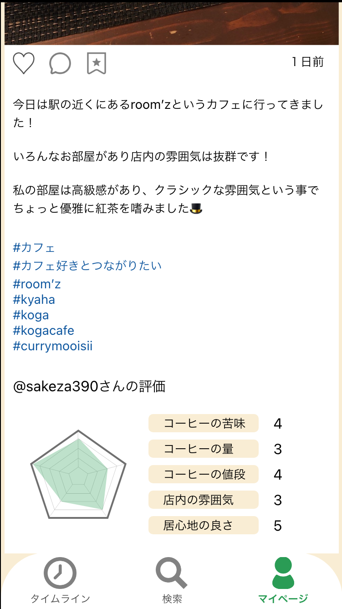

Café Plan
Caféをplanする
-
Plan（計画）× Plan（地図）
地図と写真で彩りあるカフェライフを。
「Café Plan」は写真と地図を使って、
あなたのカフェライフをPlan（設計）します。

-
検索・管理・記録・共有することで、あなたの素敵なカフェライフをサポートするサービスです。
カフェを効率よく見つけたい方
行きたいカフェが多すぎて整理がつかない方
カフェで撮った写真をうまく活用したい方……
そんなあなたをサポートするアプリです。
-
-
あなたにピッタリのカフェを探すことが出来ます。
全国のカフェを様々な条件から検索することが出来ます。
他のユーザーの投稿や現在地からでも、おすすめのカフェを見つけることが出来ます。
-
point
-
-
好きなカフェがすぐ見つかる！
あなたの好みの条件に合わせてカフェを探せるので、行きたいカフェがすぐ見つかります。
おしゃれな内装、話題のコーヒー、ランチがおいしいカフェなど、あなたの好きが必ず見つかる！
-
-
-
あなただけの地図を作ろう！
興味があるカフェをマップ・リストに保存できます。
マップにピンを立てて、あなただけのオリジナルな地図を作ろう。一目で分かるように整理できるので、予定を立てるのが簡単に！
-
-
あなたの思い出を写真と共に
あなたが撮った写真やコメントともに、アルバムに残そう！
他のユーザーのお気に入りのカフェも写真やグラフと共に見られるので、あなたに合ったカフェが見つかるかも！
-


-
-
あなたのこんなお悩み Cafe Planが解決します！
-
Café Planなら、一目で分かるようにリスト・マップに登録できます。
色を分けて保存できたりとその日のあなたの気分に合わせて予定を立てることができます！
- 
-
Café Planなら、写真を思い出としてアルバムに保存できるだけでなく、投稿し他のユーザーと共有することができます。
コメントや評価を通してお気に入りのカフェ情報を交換しよう。
-
Café Planなら、どの媒体からでもすぐにマイリストにカフェの情報を登録できます。
検索欄やタイムライン、周辺マップ、さらには別のアプリ・サービスからでもすぐに登録することができるので、スムーズに予定を立てることができます。